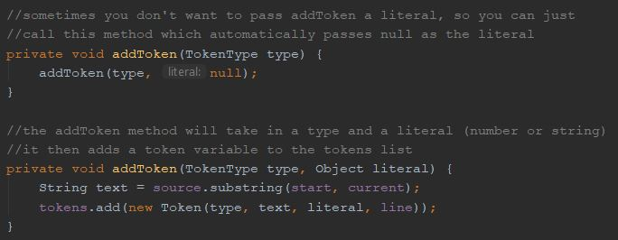

Weekly Goals
Week 4 (Repeat from last Journal)
- Research lexemes, RegEx, and tokens to begin prototyping a scanner, following along on craftinginterpreters.com.
- Start constructing my first scanner prototype with craftinginterpreters's tutorial to understand the different necessary mechanisms inside the scanner.
Week 5
- Continue the scanner portion of the craftinginterpreters.com tutorial.
- Continue researching C and Java syntax by looking at syntax references.
- Explore the possibility of using python in my language by researching the drawbacks/benefits of python. (If I want to use python, start refreshing myself on python syntax).
Week 6
- Finish the scanner portion of the craftinginterpreters.com tutorial.
- Create a framkework for my own scanner after completeing the tutorial, it should have a main loop and be able to scan single character expressions.
My Research and What I Learned
Maps
map is a data type in Java I researched this week to help implement the rest of the scanner. The basic form of a map is called a hashmap and is essentially a key/value database for variable values. I’ll use this for multi-character keywords in the language. Single character keywords like ( and + are implemented in the switch case because they aren’t involved in any longer keywords unlike how / and < are also included in // and <=. Maps are useful for longer character keywords and I’ll end up using one for longer character keywords (Nystrom). They allow me to input a string and if it’s found in the map, retrieve the correct corresponding value. An example of this can be shown with letter grades and corresponding GPA’s. To a program, the letter A and the number 4 have no inherent connection but with a map, we can create one (Garg).

Java Syntax
Building the scanner requires lots of new syntax for Java that I researched along the way. Maps are declared with the syntax Map<keyType, valueType> and defined with new HashMap<>(). Key and value pairs are then added to the hashmap by using mapName.put(key, value) (Garg). I would normally add every key and value pair in the constructor but we can make our code more organized by using static { } with the variable declarations. This just runs a small chunk of static code outside of any method (Nystrom).
Python
Because Python is an interpreted and not compiled language, it runs quite a bit slower than Java or C/C++ which are compiled. (This StackOverflow Issue). Because I am likely writing an interpreter and not a compiler, I decided to not use Python. I want my interpreter to be reasonably fast and using a slower language to run a slower program will make it much harder for that to happen. I also am already learning necessary Java syntax through the craftinginterpreters tutorial so if I use Java to build my language, I have to do less research into Python syntax.
Accomplishments
I’m working along with the craftinginterpreters.com tutorial and my progress is stored at: this Github page.
Week 1 (11/4) (Repeat - All supporting research included in journal #1)
- Scanner research led me to enum (tokens) and regex research, which I understand both concepts quite well now to the point where I could use both of them in real programs.
- I understand what lexemes are, along with lots of other important vocabulary to my project.
- I continued to work on my first prototype scanner, following along on craftinginterpreters
- I broke down and understand the main scanner loop and how it iterates through the characters in the source code.
- I implemented an enumerator variable for TokenType within my scanner.
- I used regex within my main scanner loop.
- I made a project in IntelliJ with multiple files to follow along with crafting interpreters in building a prototype scanner.
Week 2 (11/11)
- I worked to implement whitespace recognition in the scanner loop, so any spaces, tabs, or new lines are skipped over and not added as tokens.
- I also implemented slashes, as they can be used for comments or actual code. Similar to the way ! and != were implemented last journal, it checks what’s after the first slash, to tell if the source code is / or // and in the case of //, uses a new “peek” helper method to skip to the next line without adding a new token.
- I finally decided not to use Python in my language due to its lack of speed and my prior knowledge with Java.
Here are examples of achievements with internal comments to explain what the code does:
Detecting slashes

The peek method

The addToken method
The match method

Week 3 (11/18)
- I finished the scanner on the craftinginterpreters tutorial, specifically adding longer keywords using a map. There's much more added that would take up too much space in images. I recently pushed changed to the github here. An image of the map I created can be found below:

Reflection on Goals and Timeline
Goals
I’ve fallen somewhat behind my goals for this week as a lot of my time was spent not working on my actual project this week. The first Journal I did was graded and passed back so I was reviewing and editing my Journal to make corrections. I also didn’t know that the first Journal was supposed to be 3 weeks long, not 4 weeks so this Journal will be shorter than normal at only 2 real weeks of research/reflection to get back on schedule. I’ve been counting the last week of journal #1 as this journal’s first week.
Throughout the second week, I continued with the scanner portion of the craftinginterpreters.com tutorial. As I’ve gone, I’ve continued to learn more Java syntax, more specifically learning about helper methods and string manipulation functions. I do not plan to incorporate Python into my project as it would require extra research into the syntax of the language, whereas I’m constantly learning about Java syntax and scanner implementation at the same time on craftinginterpreters.com. It’s also slower than Java and as I’ll be writing fairly unoptimized code to start, so I don’t want Python slowing down my program anymore than it already may be.
During the second week, I finished the scanner tutorial. I am a bit behind and haven’t created my own scanner’s framework as I got distracted working on my website/journals, but I plan to catch up over the long Thanksgiving weekend. I also have my job shadow during the 27th where I plan to ask Mr. Jurow questions about my project and the plans I have for it.
Timeline
As far as my timeline goes, it still needs to be revised. I have been following along with the craftinginterpreters tutorial and haven’t started my own scanner yet. With my current pace I’ll be ahead of schedule on the large scale deadlines I set for myself (like finish the basic scanner, the basic parser, the advanced scanner, and advanced parser) but the small guiding deadlines regarding my research are still off. I’m doing all the research ahead of time during the tutorial, then building my own scanner after the tutorial, whereas my initial timeline had me researching a small amount, building a small amount, then researching further, then building further, etc.